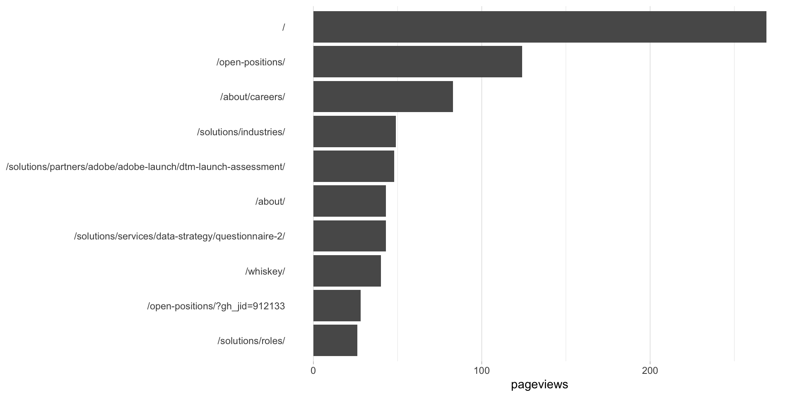

This example pulls the top 10 pages for the last thirty days, for visits that occurred on a mobile device. We’ll doing this by referencing the standard Mobile Segment in Google Analytics, but the process is exactly the same for referencing a custom segment that you built. The example explains that in the comments in the code. This returns the exact same results as these two examples, but through different means for defining/referencing the segment:
All three approaches are perfectly acceptable. This example, though, relies on the segment being available through the Google Analytics web interface – as a standard segment or a custom segment.
Be sure you’ve completed the steps on the Initial Setup page before running this code.
For the setup, we’re going to load a few libraries, load our specific Google Analytics credentials, and then authorize with Google.
# Load the necessary libraries
library(googleAnalyticsR)
library(tidyverse)
library(devtools)
# Load the client ID, client secret, and GA view ID
client_id <- Sys.getenv("GA_CLIENT_ID")
client_secret <- Sys.getenv("GA_CLIENT_SECRET")
# Set the client ID and client secret as options for googleAuthR
options(googleAuthR.client_id = client_id)
options(googleAuthR.client_secret = client_secret)
# Reload the googleAnalyticsR package so those options get set in googleAuthR
devtools::reload(pkg = devtools::inst("googleAnalyticsR"))
# Authorize GA. Depending on if you've done this already and a .httr-oauth file has
# been saved or not, this may pop you over to a browser to authenticate.
ga_auth()
# Set the view ID and the date range. If you want to, you can swap out the Sys.getenv()
# call and just replace that with a hardcoded value for the view ID. And, the start
# and end date are currently set to choose the last 30 days, but those can be
# hardcoded as well.
view_id <- Sys.getenv("GA_VIEW_ID")
start_date <- Sys.Date() - 31 # 30 days back from yesterday
end_date <- Sys.Date() - 1 # YesterdayIf that all runs with just some messages but no errors, then you’re set for the next chunk of code: pulling the data.
The key step here is figuring out the ID of the segment that you want to use. One option – once you’ve loaded googleAnalyticsR and tidyverse and run ga_auth() – is to create a data frame with all your segments in it. Simply dropping this command in the console will create a segs data frame that will list all of them. That can be a mighty long list:
segs <- as.data.frame(ga_segment_list()) %>% select(items.segmentId, items.name, items.type)
Alternatively, you can just hop over to the Google Analytics Query Explorer, choose a segment in the segment field, and then copy the value (you have to have the Show segment definitions instead of IDs checkbox unchecked to get the ID).
# Create the segment object. See ?segment_ga4() for details. Note that the name -- the first
# argument -- is actually moot here. When you use the segment_id argument, what will actually
# get used as the name of the segment is, well, the name of the segment in the web interface.
# To illustrate, even though I've put "Mobile Sessions Only" in the name argument for this
# function, the output below actually uses the name "Mobile Traffic."
my_segment <- segment_ga4("Mobile Sessions Only",
segment_id = "gaid::-14")
# Pull the data. See ?google_analytics_4() for additional parameters. Depending on what
# you're expecting back, you probably would want to use an "order" argument to get the
# results in descending order. But, we're keeping this example simple. Note, though, that
# we're still wrapping my_segment in a list() (of one element).
ga_data <- google_analytics_4(viewId = view_id,
date_range = c(start_date, end_date),
metrics = "pageviews",
dimensions = "pagePath",
segments = my_segment)
# Go ahead and do a quick inspection of the data that was returned. This isn't required,
# but it's a good check along the way.
head(ga_data)| pagePath | segment | pageviews |
|---|---|---|
| / | Mobile Traffic | 175 |
| /?author_name=&cat= | Mobile Traffic | 13 |
| /?author_name=&cat=227 | Mobile Traffic | 2 |
| /?author_name=eric-peterson&cat= | Mobile Traffic | 2 |
| /?author_name=eric-peterson&cat=659 | Mobile Traffic | 2 |
| /?p=43 | Mobile Traffic | 2 |
Since we didn’t sort the data when we queried it, let’s go ahead and sort it here and grab just the top 10 pages.
# Using dplyr, sort descending and then grab the top 10 values. We also need to make the
# page column a factor so that the order will be what we want when we chart the data.
# This is a nuisance, but you get used to it. That's what the mutate function is doing
ga_data_top_10 <- ga_data %>%
arrange(-pageviews) %>%
top_n(10) %>%
mutate(pagePath = factor(pagePath,
levels = rev(pagePath)))
# Take a quick look at the result.
head(ga_data_top_10)| pagePath | segment | pageviews |
|---|---|---|
| /excel-tips/converting-a-date-in-excel-to-week-bi-week-month-and-more/ | Mobile Traffic | 184 |
| / | Mobile Traffic | 175 |
| /excel-tips/excel-dynamic-named-ranges-never-manually-updating-your-charts-2/ | Mobile Traffic | 165 |
| /excel-tips/excel-dropdowns-done-right/ | Mobile Traffic | 127 |
| /adobe-analytics/advanced-click-rates-adobe-analytics-placement/ | Mobile Traffic | 112 |
| /excel-tips/excel-dynamic-named-ranges-with-tables-never-manually-updating-your-charts/ | Mobile Traffic | 107 |
This won’t be the prettiest bar chart, but let’s make a horizontal bar chart with the data. Remember, in ggplot2, a horizontal bar chart is just a normal bar chart with coord_flip().
# Create the plot. Note the stat="identity"" (because the data is already aggregated) and
# the coord_flip(). And, I just can't stand it... added on the additional theme stuff to
# clean up the plot a bit more.
gg <- ggplot(ga_data_top_10, mapping = aes(x = pagePath, y = pageviews)) +
geom_bar(stat = "identity") +
coord_flip() +
theme_light() +
theme(panel.grid.major.y = element_blank(),
panel.grid.minor.y = element_blank(),
panel.border = element_blank(),
axis.title.y = element_blank(),
axis.ticks.y = element_blank())
# Output the plot. You *could* just remove the "gg <-" in the code above, but it's
# generally a best practice to create a plot object and then output it, rather than
# outputting it on the fly.
gg
This site is a sub-site to dartistics.com